Home / Videos and talks
Videos and talks
From the National Defence College and the Army War College to CEO summits and China studies forums.
11recordings31talks since 20235to military and security audiences
Watch
Recorded panels, lectures and workshops. Links open the recording or the host’s event page.
23 Sep 2026BRICS, multilateralism and global governance: perspectives from the New Delhi SummitInstitute of Chinese Studies, Delhi. With Rajan Kumar and Meeta Keswani Mehra, chaired by Alka Acharya.Watch the recording
Nov 2025China’s technological advances and potential areas of future trade-restrictive measuresSpecial panel, 18th All-India Conference of China Studies, IIM Indore.Watch the recording
Nov 2025Doing business in and with China: voices from Indian business leadersSpecial session, 18th All-India Conference of China Studies, IIM Indore.Watch the recording
Aug 2025Pre-conference workshop for paper presenters, 18th AICCSRecorded for doctoral candidates ahead of the conference he convened.Watch the recording
Jul 2025US trade tariffs: Asia’s response, resilience or retreatAsia Trade Conference 2025, Melaka, Malaysia. Organised by CESD Asia with RIS India.Watch the recording
Apr 2025Decoding China’s 2025 Two Sessions: politics and prioritiesObserver Research Foundation, China Chronicles series.View event page
21 Aug 2024The Third Plenum and after: China’s economic, political and ideological messagingInstitute of Chinese Studies, Delhi. Panellist.View event page
18 May 2022China and the emerging regional supply chainICS Wednesday Seminar, with Amita Batra. Chaired by Santosh Pai.Watch the recording
2 Jun 2021China’s emergence as a tech powerImpact and Policy Research Institute (IMPRI). Lead speaker.View event page
27 Aug 2020Isolation or engagement of China in the post-Covid world orderRecorded discussion listed on his Institute of Chinese Studies profile.Watch the recording
IIM Indore10 years of IPM: a message from Prof. G. Venkat RamanAs former Chair of IIM Indore’s Integrated Programme in Management.Watch the recording
Lectures, keynotes and panels
Filter by audience. Photographs are from the events.
- 2026
- 23 SepInstitute of Chinese Studies, DelhiPanel on BRICS, multilateralism and global governance after the New Delhi Summit
- 18 SepIMC International Research Conference, IIM Lucknow NoidaPaper: Teaching geopolitics in management education, from headlines to frameworks
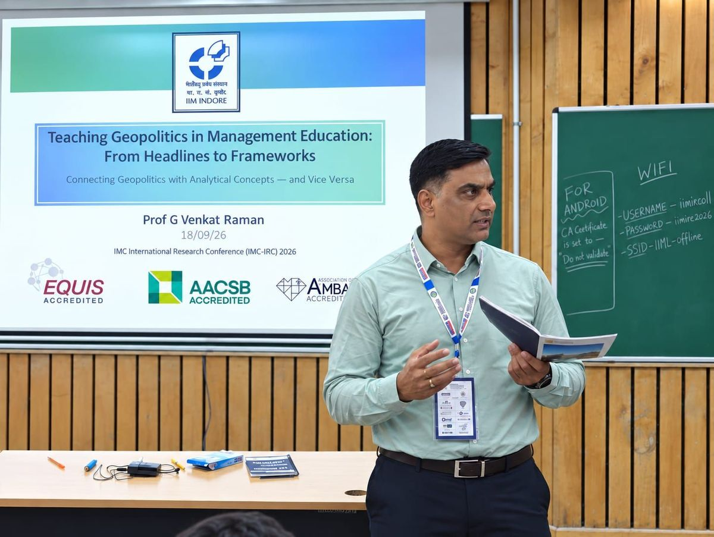
- 16–17 Sep1st Chanakya Forum on China, Chanakya University, BengaluruGeoeconomics: China Shock 2.0 and the de-risking imperative
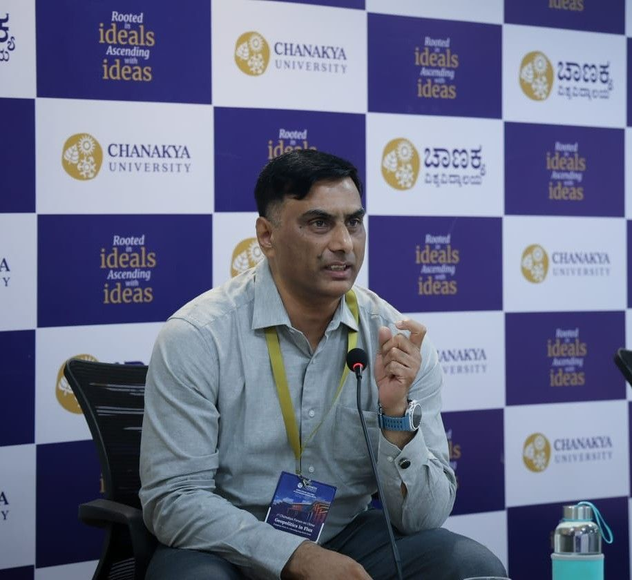
- 19 AugSenior Command Course, Army War College, MhowMilitary & securityFrom chokepoints to chips: geoeconomics in contemporary strategic competition
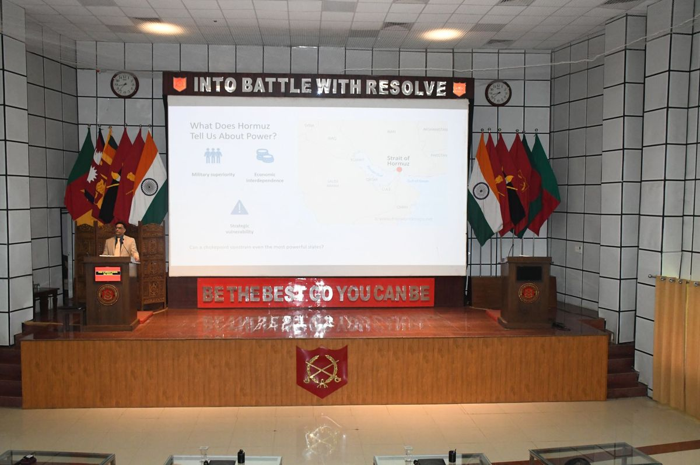
- 11 AugIPM 2026 induction, IIM IndoreFaculty address at the induction of the new Integrated Programme in Management batch
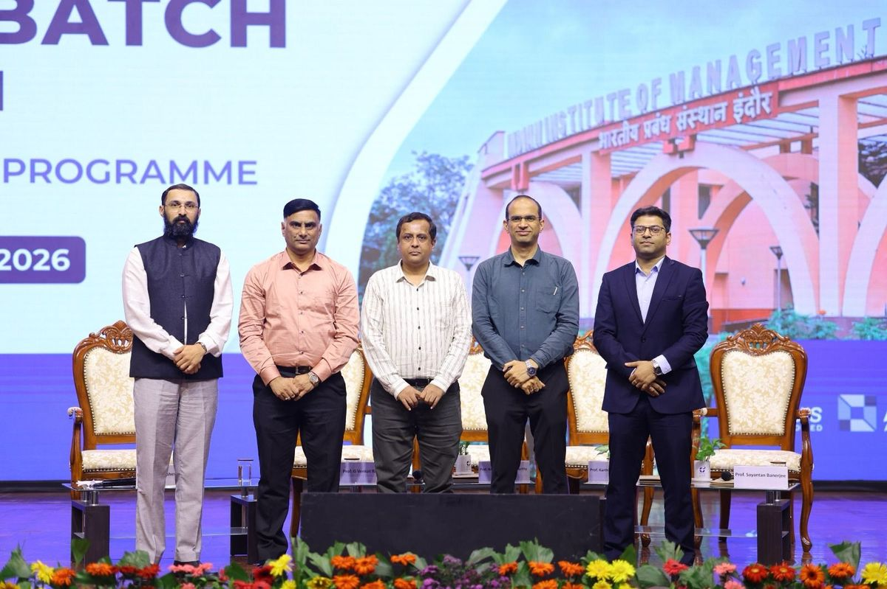
- 24 JulCII Tamil Nadu CEO Summit, ChennaiBusinessAddress on geopolitics as a core driver of business strategy and competitive advantage
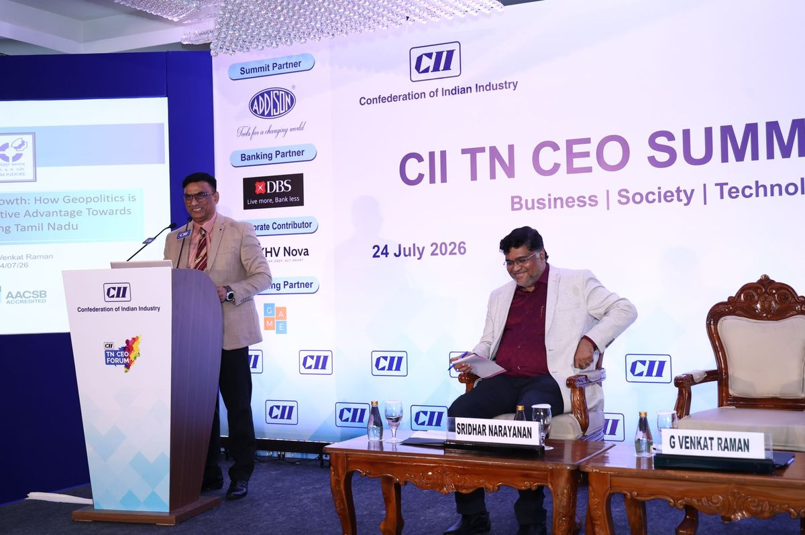
- 28 MayArmy War College, MhowMilitary & securityGeoeconomics and strategic competition, for senior Army officers from neighbouring South Asian countries
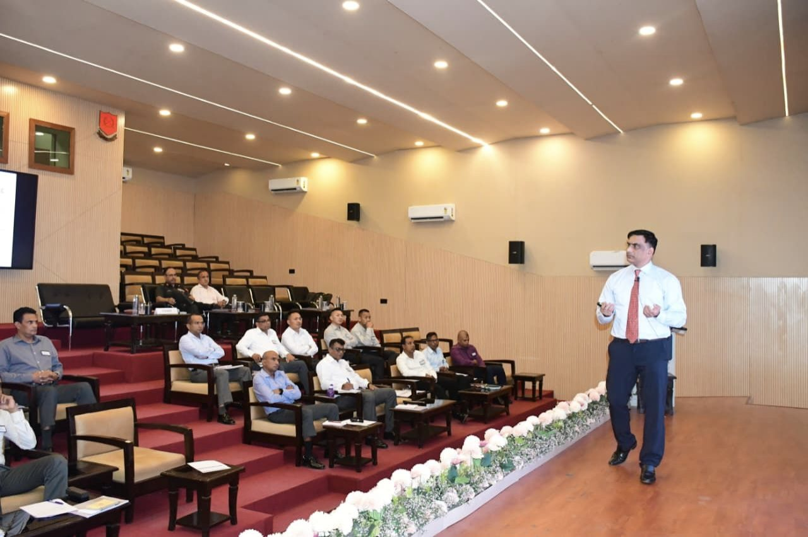
- MayNational Defence College, New DelhiMilitary & securityBRICS and the contest for multipolarity: China, institutional pathways and India’s security
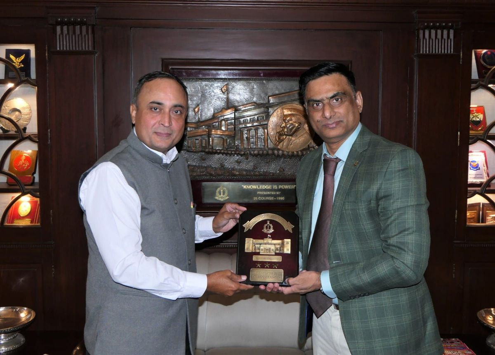
- 24 MarThe Democracy ForumPanel on India’s BRICS presidency and the Iran war: strategic autonomy and multi-alignment under strain
- MarSouth Asian University, New DelhiSpecial lecture: Multilateralism with Chinese characteristics, implications for South Asia
- MarIndian Council of World Affairs, New DelhiOne-day seminar on China’s security
- 2026Centre for East Asian Studies, JNUInvited back to speak at his alma mater
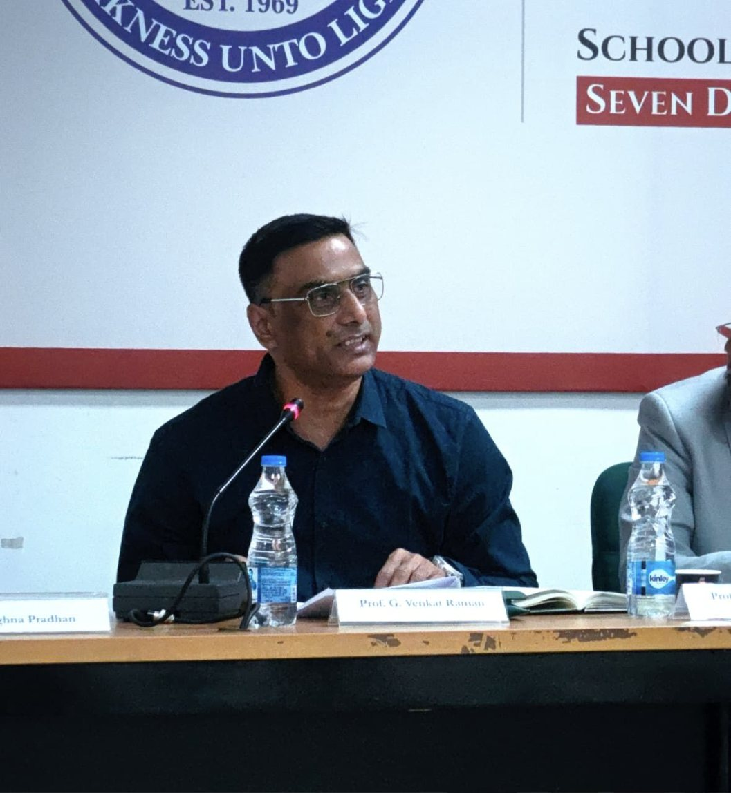
- 2025
- 13–14 DecPurvodaya Perspectives 2025, BhubaneswarPanel on frontier technologies at the international conference organised by The Energy Forum, co-sponsored by the MEA’s Policy Planning and Research division and CII
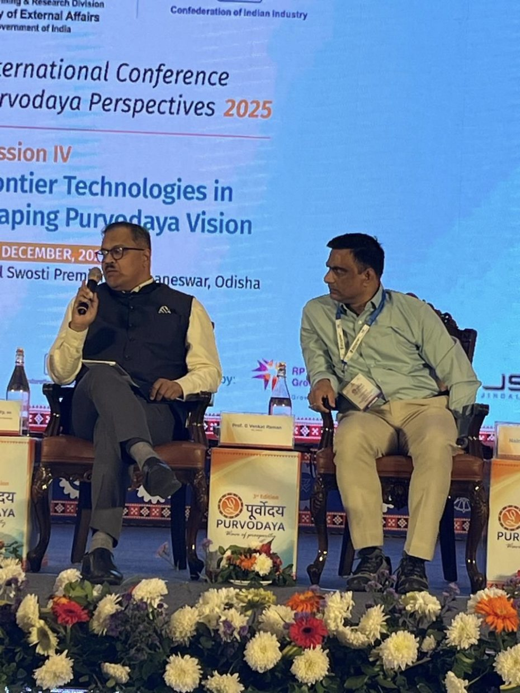
- NovCentral School for Weapons and Tactics, BSF, IndoreMilitary & securityManaging the China challenge: possible geopolitical scenarios, for senior BSF and police officers
- NovSchool of Management, Prestige University, IndoreHow is China rewiring the globalisation debate?
- OctHigher Command Course, Army War College, MhowMilitary & securityGuest lecture: Tech, defining contours of national security
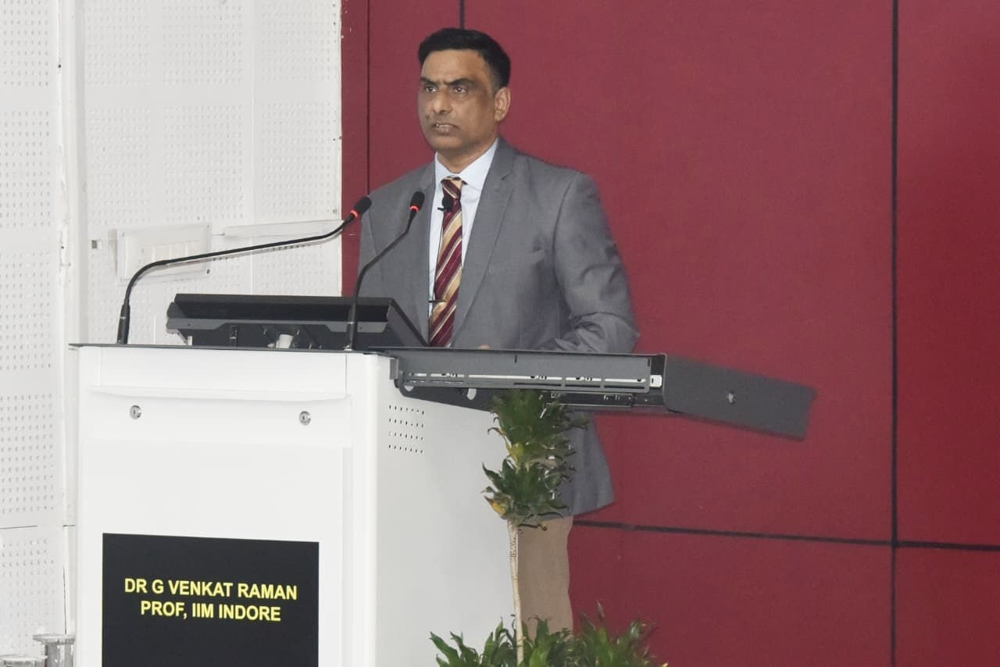
- 24–26 Oct18th All-India Conference of China Studies, IIM IndoreConvenor. Co-hosted with ICS Delhi and co-sponsored by the MEA’s Policy Planning and Research division and ICSSR
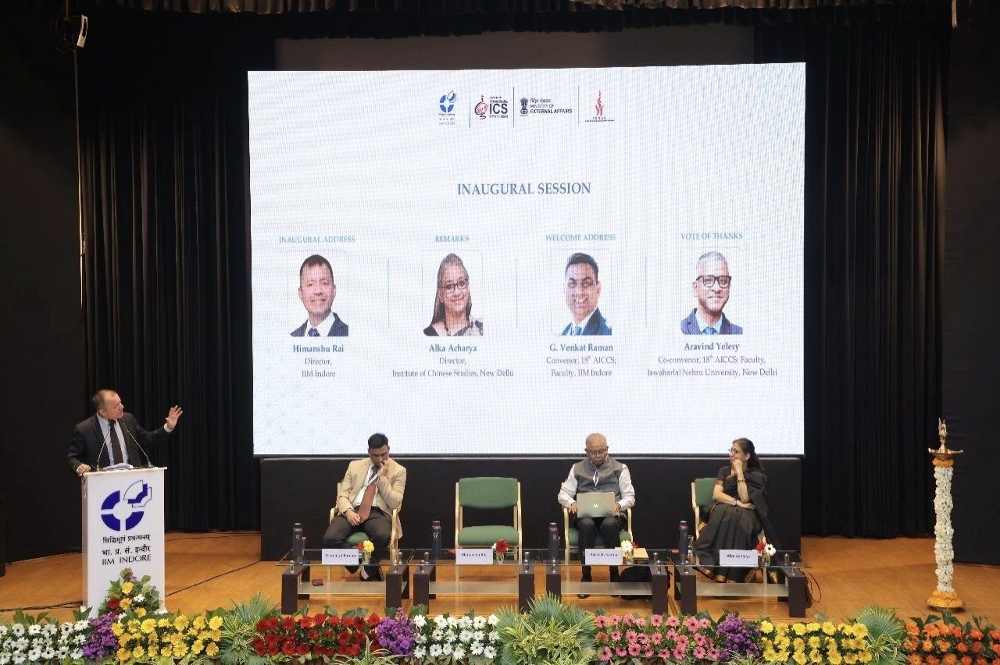
- Sep2nd Conference on Domestic Governance in China, PuneIs innovation possible in a centralised political system? China’s science and technology policy
- JulAsia Trade Conference 2025, Melaka, MalaysiaPanel: US trade tariffs, Asia’s response
- AprObserver Research Foundation, New DelhiChina Chronicles panel: decoding China’s 2025 Two Sessions
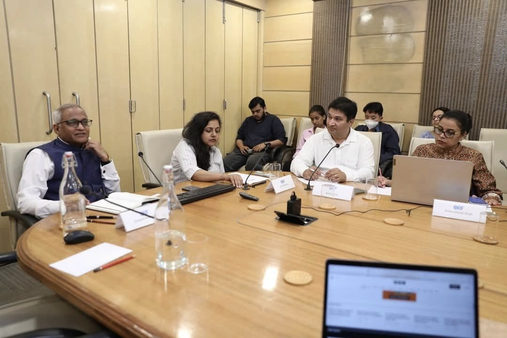
- AprCentre for East Asian Studies, JNUXintralisation and politics in command, for doctoral candidates
- 2024
- Dec7th India Forum on China, MIT-WPU PuneSpeaker and session chair
- Nov17th All-India Conference of China Studies, ManipalConvenor and panel lead
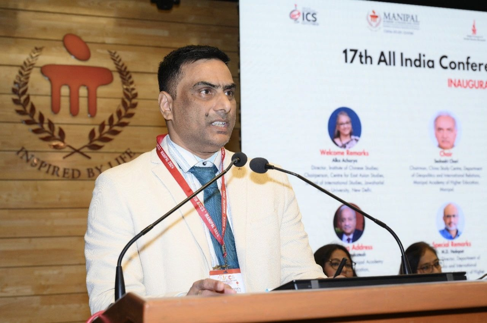
- 9 FebWake Forest University, USAIndia’s handling of the China challenge
- 2024University of Texas at El PasoTalk and discussion with students
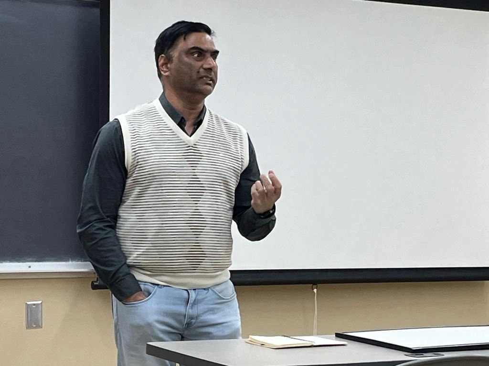
- 2023
- NovSan José State University, CaliforniaFulbright outreach lecture: India’s handling of the China challenge
- OctGeorge Mason University, USAFulbright lecture series on US–China tech rivalry
- SepSchar School of Policy and Government, George Mason UniversityBegan teaching his seminar course, China Challenge, to graduate and doctoral students
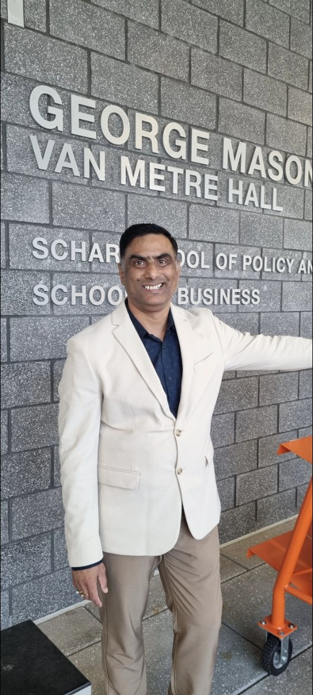
- JulQueen Mary University of LondonWorkshop on property rights in China
- AprICN Business School, FranceKeynote on the geoeconomics of the Indo-Pacific
- 2023BRICS Business Forum, ShanghaiKeynote speaker